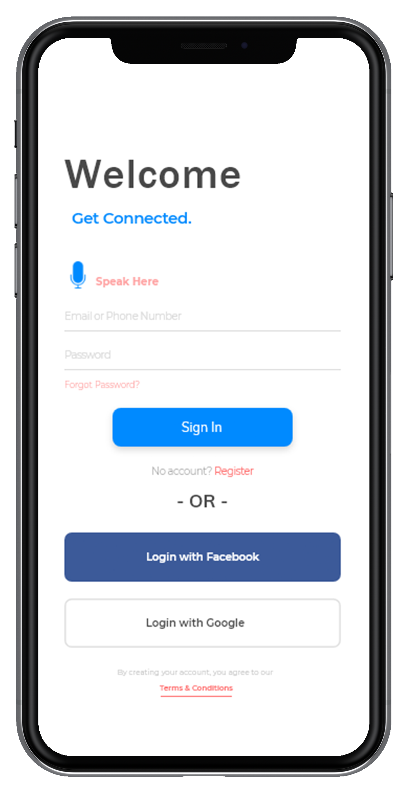

Human Centered Design

May 2018 - August 2018
Choice. Chance. Change.
Addressing and taking steps one at a time to expand
inclusiveness.
One of the issues that are still current and very much relevant today
is the issue of
inclusiveness in the workforce. More often than not,
there is no specific pipeline or adequate training to manage situations
that involve disabled people nor are there enough resources to go
around for them to get started into stepping into
their new career step.
"Coming together is a beginning, keeping together is progress,
working together is success."
Team
Team Members:
Teresa Pho
Phil Hedayatnia
Linda Hsu
Monica Chan
Nguyen Trang
Maxime Alardo
Audience
Disabled People
Non-Disabled People
HR Departments
Goals
To implement a solution that
brings awareness and improves
inclusiveness of disabled people
in workforce and encourages
active and consistent
participation from both sides.
To create a stronger bridge and
open conversation between
abled and disabled people.
Constraints
Time-extensive in
rebuilding HR infrastructure.
Implementation of any solution
will take time to yield results
of progress. Mobile apps
and hosting events can be
costly.
Question
How might we
integrate people with and
without disabilities?
Significance of Issue
As of 2017, only 18.7% of the workforce are comprised of disabled people. Diversity encompasses over a variety of different groups,
and often most than not, the disabled people group does not receive enough recognition or support. This sensitive issue is often
overlooked or not properly addressed due to the prenotions of both parties (abled vs disabled). With diversity and inclusion
being a pressing issue of today, my team and I decided to address and tackle on this problem ourselves.
User Research
Step 1: Define the problems and what disability is.
Before we can research any further, we must ask ourselves,
"What is a disability?"
- "A disability is an impairment that may be cognitive, developmental, intellectual,
mental, physical, sensory, or some combination of these. It substantially affects
a person's life activities and may be present from birth or occur during a person's
lifetime."
&
- "Disabilities is an umbrella term, covering impairments, activity limitations,
and participation restrictions."
Step 2: Research on current disability employment/HR issues and analogous scenarios.
Analagous Inspiration
- Inclusivity, accessibility, reducing stigma, discrimination
- People living in rural areas
- People without access to fast wifi
- International people (accents or english-speaking skills)
in interviews
- Personalities in interviewing
- Second language teachers and their methods to help assimilate
non-native speakers into communities
- Be My Eyes A mobile app that connects those visually impaired
to volunteers all around the world via video chat.
- Voice Dream Reader A mobile app that allows disabled people to
read through listening.
Issues
- Only 35% of U.S. civilians with disabilities between the ages 18
and 64 had a job in 2015.
- Wyoming is the state with the highest number of employment
for disabled people, which is 57%.
- Employed persons with a disability were more likely to be
self-employed than those with no disability.
- Persons with a disability were less likely to work in management,
professional, and related occupations than
those without a disability (34.1 percent, compared with 39.9 percent).
Step 3: Define the problems and what disability is.
Quotes
“There isn’t a professional development program for them to
learn more about how to “handle” cases of disabled employees.”
“Not a lot of framework around disabilities...
Increase pipeline in D&I sector.”
Interviews
Step 4: Collect and organize main ideas.
Affinity Mapping
Final Idea
User Journey & Storyboard
High-Fidelity
Reflections
Even in the 21st century, we still have a great deal to improve upon when it comes to inclusiveness and diversity. In particular, I decided to join with a band of people from San Francisco to tackle on the challenge of inclusiveness of disabled people. This is an issue we all believe needs to be addressed and have more spotlight on, and I learned a great deal of the difficulties, yet motivations and new approaches that the disabled utilize in order to get around of their daily tasks and accomplish the same goals.
As someone who is abled, but lives with disabled parents, I had more of an understanding of what they went through as well as the disabled people around me. However, talking to several interviewees (not all interviewees were included in this due for conciseness) inspired me if anything of the new methodologies, resources, and approaches they used to complete a task. For example, Matt had Stargardt’s syndrome, but that did not slow him down from programming and debugging. He used a screenreader to knock off his tasks and always kept a positive perspective and attitude during work. If anything, most of the interviewees stated that they want to showcase more spotlight onto these issues and don’t mind sharing, which is contrary to what most would believe.
Prior to this, we created a support network mobile app to connect the disabled to each other as well as to the abled (for job opportunities) while providing a forum like (chatrooms) environment where users can click onto any topic or “chat room” they would like to join to discuss these issues and gather information and resources among each other.
If we want to improve, we have to leverage the battlefield, not just for the abled, but as many people out there as possible. This is a required joint effort, and it takes just one person to kick it off!